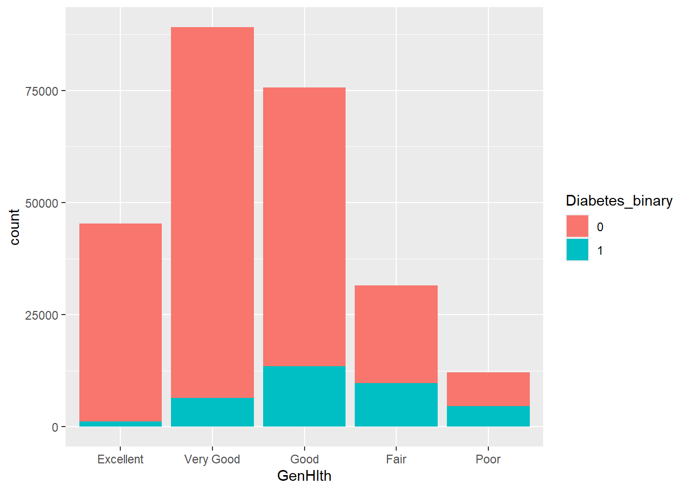
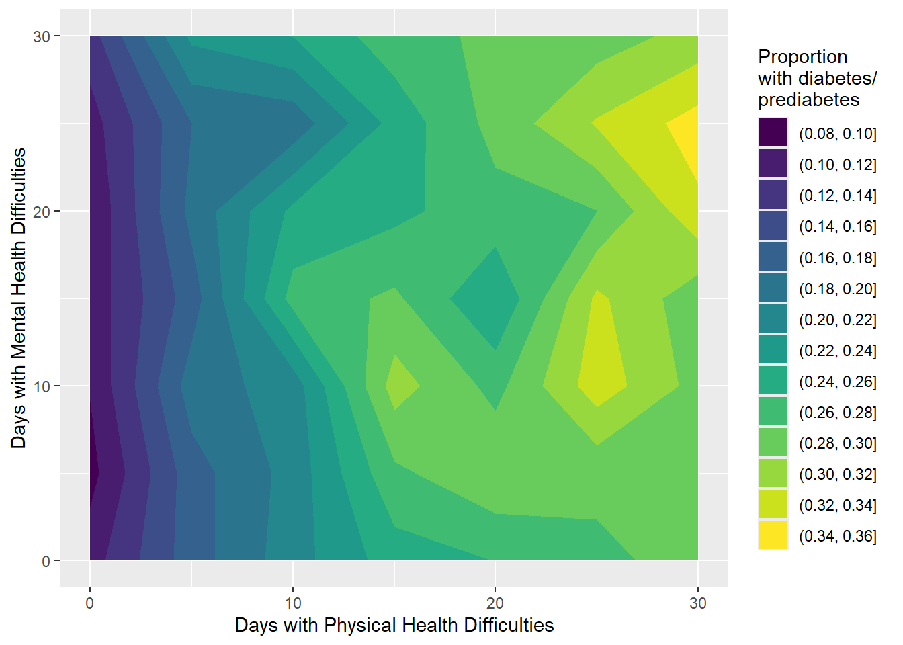

This project utilizes the Diabetes Health Indicators Dataset, which was sourced from the CDC’s Behavioral Risk Factor Surveillance System survey from the year 2015. The dataset contains a collection of health indicators, along with a binary field indicating diabetes status; a value of 1 means the respondent has diabetes or prediabetes, and a value of 0 means he or she does not. The EDA in this file was performed with the goal of identifying a subset of variables that can be used as predictors for two tree-based models. I end up choosing two numeric predictors, BMI and PhysHlth. BMI is body mass index, and PhysHlth is an integer between 0 and 30 that indicates how many days in the last 30 days that the respondent experienced illness or injury. I choose one categorical predictor, GenHlth, in which the respondent rates their own general health on a scale from 1 for excellent through 5 for poor. The final three predictors I choose are binary, with values of 1 or 0 indicating the presence or absence (respectively) of the specified condition. These variables are HighBP (high blood pressure), HighChol (high cholesterol), and DiffWalk (difficulty walking).
Rows: 253680 Columns: 22
── Column specification ────────────────────────────────────────────────────────
Delimiter: ","
dbl (22): Diabetes_binary, HighBP, HighChol, CholCheck, BMI, Smoker, Stroke,...
ℹ Use `spec()` to retrieve the full column specification for this data.
ℹ Specify the column types or set `show_col_types = FALSE` to quiet this message.
Education: 1 = Never attended, or only kindergarten, 2 = Grades 1-8 (Elementary), 3 = Grades 9-11 (some high school), 4 = Grades 12 or GED (High school graduate), 5 = College 1-3 years (Some college or technical school), 6 = College 4 years or more (College graduate)
The max number for BMI looks kind of surprising, at 98. Since BMI of greater than or equal to 30 is obese, I think it makes sense to look at the distribution of the values for this variable to see if it looks reasonable for a sample that should somewhat represent the general population. The median of 27 and relatively low standard deviation of 6.61 show it’s most likely the really high values are outliers, but it would be good to get a more thorough look at summary statistics.
All other values appear consistent with what the documentation describes. There are a lot of binary variables, and then there are a collection of variables with coded numeric values that need to be translated to a descriptive label.
Data Cleaning
Recast data columns
diabetes <- diabetes |>mutate(Diabetes_binary =as.factor(Diabetes_binary),HighBP =as.factor(HighBP),HighChol =as.factor(HighChol),CholCheck =as.factor(CholCheck),Smoker =as.factor(Smoker),Stroke =as.factor(Stroke),HeartDiseaseorAttack =as.factor(HeartDiseaseorAttack),PhysActivity =as.factor(PhysActivity),Fruits =as.factor(Fruits),Veggies =as.factor(Veggies),HvyAlcoholConsump =as.factor(HvyAlcoholConsump),AnyHealthcare =as.factor(AnyHealthcare),NoDocbcCost =as.factor(NoDocbcCost),DiffWalk =as.factor(DiffWalk),GenHlth =factor(GenHlth,levels =1:5,labels =c("Excellent", "Very Good", "Good", "Fair", "Poor")),Sex =factor(Sex, levels =0:1, labels =c("Female", "Male")),Age =factor(Age,levels =1:13,labels =c("18 to 24", "25 to 29", "30 to 34", "35 to 39", "40 to 44", "45 to 49", "50 to 54", "55 to 59", "60 to 64", "65 to 69", "70 to 74", "75 to 79", "80 and over")),Education =factor(Education,levels =1:6,labels =c("Never attended/Only Kindergarten", "Elementary", "Some high school", "High school graduate", "Some college/tech school", "College graduate")),Income =factor(Income,levels =1:8,labels =c("Less than $10,000", "$10,000 to $14,999", "$15,000 to $19,999", "$20,000 to $24,999", "$25,000 to $34,999", "$35,000 to $49,999","$50,000 to $74,999", "$75,000 or greater")) )
Make sure the factors that had coded values changed to descriptive ones look right
diabetes |>group_by(Sex) |>summarize(count =n())
# A tibble: 2 × 2
Sex count
<fct> <int>
1 Female 141974
2 Male 111706
diabetes |>group_by(Age) |>summarize(count =n())
# A tibble: 13 × 2
Age count
<fct> <int>
1 18 to 24 5700
2 25 to 29 7598
3 30 to 34 11123
4 35 to 39 13823
5 40 to 44 16157
6 45 to 49 19819
7 50 to 54 26314
8 55 to 59 30832
9 60 to 64 33244
10 65 to 69 32194
11 70 to 74 23533
12 75 to 79 15980
13 80 and over 17363
# A tibble: 6 × 2
Education count
<fct> <int>
1 Never attended/Only Kindergarten 174
2 Elementary 4043
3 Some high school 9478
4 High school graduate 62750
5 Some college/tech school 69910
6 College graduate 107325
# A tibble: 8 × 2
Income count
<fct> <int>
1 Less than $10,000 9811
2 $10,000 to $14,999 11783
3 $15,000 to $19,999 15994
4 $20,000 to $24,999 20135
5 $25,000 to $34,999 25883
6 $35,000 to $49,999 36470
7 $50,000 to $74,999 43219
8 $75,000 or greater 90385
# A tibble: 2 × 6
Diabetes_binary min q1 median q3 max
<fct> <dbl> <dbl> <dbl> <dbl> <dbl>
1 0 12 24 27 31 98
2 1 13 27 31 35 98
This looks reasonable, but I’ll still do a density plot to make sure. Mainly to make sure that the values in the lower 25th and the upper 75th percentiles aren’t all grouped at the extremes, but instead spread out a bit. If everything above 35 or so are all 98’s for instance, I’d be concerned that 98 is actually a coded value for something rather than a true value (e.g. what if the true values are capped at 35, and anything exceeding it was coded as 98). If they’re spread out, then I’d be more comfortable assuming they’re valid outliers.
`summarise()` has grouped output by 'Age'. You can override using the `.groups`
argument.
# A tibble: 26 × 5
# Groups: Age [13]
Age Diabetes_binary mean_BMI mean_MentHlth mean_PhysHlth
<fct> <fct> <dbl> <dbl> <dbl>
1 18 to 24 0 26.0 4.36 1.92
2 18 to 24 1 29.7 5.68 6.46
3 25 to 29 0 27.5 3.74 2.05
4 25 to 29 1 34.2 6.93 6.14
5 30 to 34 0 28.3 3.76 2.36
6 30 to 34 1 34.2 6.16 6.06
7 35 to 39 0 28.3 3.61 2.54
8 35 to 39 1 34.4 6.87 6.24
9 40 to 44 0 28.5 3.53 2.78
10 40 to 44 1 35.1 6.87 7.78
# ℹ 16 more rows
Correlation to Diabetes Status
# see if there are correlations between Diabetes status and all other columnscorrelation <- diabetes |>lapply(as.numeric) |>as.data.frame() |>summarise(across(everything(), \(x) list(cor.test(x, as.numeric(diabetes$Diabetes_binary))))) # transform the correlation statistics from list-column to a flat numeric columncorr_col <- correlation |>map(1) |># access first element (a list) of each list-columnmap("estimate") |># pull just the estimate element for each inner listbind_rows() # compress into a simple columntibble(Variable =names(correlation)) |>bind_cols(corr_col) |>filter(abs(cor) >0.02, cor <1.0) |>arrange(desc(abs(cor)))
Might be good to focus on the top 5 variables in the above list as predictors. These variables are consistent with the fact that diabetes is associated with heart disease, as discussed in the documentation for the dataset. Difficulty walking may be related to neuropathy, which is also a complication of diabetes. Problems with circulation also occur in diabetics, and can also impact general health by reducing the effectiveness of the immune response (immune cells will have a harder time reaching sites of infection and damage if there are issues with blood flow). Therefore having some relationship between GenHlth and diabetes status is reasonable.
I’ll look at the correlations between those 5 predictors and all other variables to see if they have associations with other variables that might also be interesting to look at.
correlation_2 <- diabetes |>map(as.numeric) |>as_tibble() |>cor()# just look at top 5correlation_2[,c("GenHlth", "HighBP", "DiffWalk", "BMI", "HighChol")]
Nothing particularly highly correlated, just some weak associations between those “top 5” variables already identified, plus some association with GenHlth and DiffWalk/PhysHlth/Ment, and also some very weak correlation with heart attack history and the “top 5”.
Contingency Tables
Using the above correlations as a guide, I will look at contingency tables of the correlation values that are the farthest from 0 (although none are particularly high).
Here is a bar chart showing how a higher proportion of respondents reporting Good, Fair, or Poor health have a higher rate of diabetes/prediabetes than respondents reporting Very Good or Excellent health.
g <-ggplot(data = diabetes, aes(x = GenHlth))g +geom_bar(aes(fill = Diabetes_binary))

Because there was some correlation between the diabetes status and GenHlth, and there was also correlation between GenHlth and the days of physical and/or mental health difficulties, I thought it would be cool to put them on a contour map to see if there were patterns for diabetes status vs Physical and Mental health days.
When I initially plotted the original data points for physical and mental health days, which had a range of 0-30, there were many spots on the plot that were blank because there were no respondents that gave that particular combination of days. I set up a rounded column for each of these variables which rounded the number down to the nearest 5 (so 0-4 = 0, 5-9 = 5, 10-14 = 10, etc.).
I also added in a new column just for the plot which gives the proportion in each of those combinations had diabetes or prediabetes. This was used as the z-value for the plot.
# note: Diabetes_binary is converted to character first since it's a factor, and I want to make sure to sum up the original values of 0 and 1 and not the factor levels.diabetes_rollup <- diabetes |>mutate(PhysHlth_rnd =floor(PhysHlth/5)*5,MentHlth_rnd =floor(MentHlth/5)*5) |>group_by(PhysHlth_rnd, MentHlth_rnd) |>summarise(Diabetes_prop =sum(as.numeric(as.character(Diabetes_binary)))/n())
`summarise()` has grouped output by 'PhysHlth_rnd'. You can override using the
`.groups` argument.
h <-ggplot(data = diabetes_rollup, aes(x = PhysHlth_rnd, y = MentHlth_rnd)) h +geom_contour_filled(aes(z = Diabetes_prop)) +labs(x ="Days with Physical Health Difficulties",y ="Days with Mental Health Difficulties",fill ="Proportion \nwith diabetes/ \nprediabetes")

This shows a cool pattern where the more days that a person reported sick or injured days, the higher the proportion of diabetes/prediabetes. This effect looks more related to physical health issues when there are fewer than 10-15 days with those types of issues, but as the number of days gets higher, the people with more days of mental health struggles start to have higher rates of diabetes/prediabetes. Anecdotally, this seems consistent with the assumption that a person with these conditions who reports many days of the month with physical health burdens may start to struggle with mental health as well.
Boxplot
Boxplot for BMI to see the distribution of values
g <-ggplot(data = diabetes, aes(x = Diabetes_binary, y = BMI, fill = Diabetes_binary))g +geom_boxplot()
It’s interesting to note that the median BMI is higher in the Has Prediabetes/Diabetes group than the other. But both groups have a large number of BMI’s outside the middle 50%, which is interesting.
Density Plot
g <-ggplot(data = diabetes, aes(x = BMI, fill = Diabetes_binary))g +geom_density(alpha =0.5) +geom_vline(aes(xintercept =median(BMI[Diabetes_binary ==0])), color ="darkgreen", linetype ="dashed") +geom_vline(aes(xintercept =median(BMI[Diabetes_binary ==1])), color ="navy", linetype ="dashed") +scale_fill_manual(values =c("paleturquoise", "peachpuff")) +labs(x ="BMI", y ="Proportion")
Density plot provides another view showing that the prediabetes/diabetes group has higher BMI on average, and we can also see that although there’s a long tail on the right side, there aren’t a huge number of points in the extremes relative to the size of the data set.
To the Models
With the EDA complete, and predictors selected, we can now fit the models.